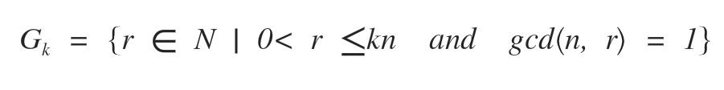
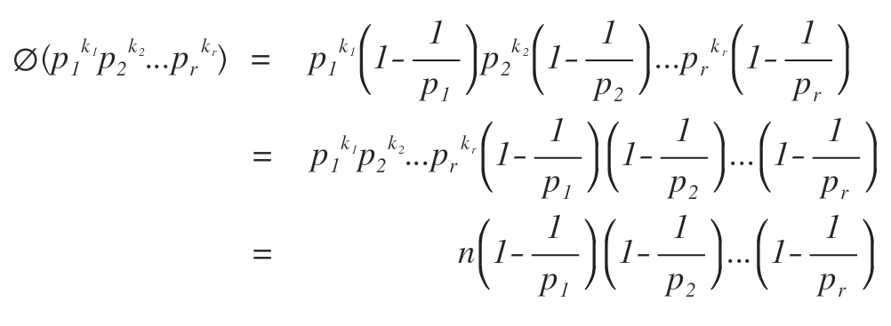

Euler's Totient Function's Proof
Euler's Totient Function:
It states that all positive integers, n, have a prime factorization as follows:

then, the number of positive integers less than 'n' that are co-prime to 'n' is given
by phi(n) where phi(n) is defined as follows:

To prove the formula above, we use the help of 3 following lemmas:
Lemma 1:
Let G be the set as follows

then,

where, |A| is the number of elements in set A.
Proof:
We may use an example to prove the lemma instead of a variable but it is for simplicity purpose. For actual proof,
just substitute in some variable in-place of the example number.
Let n = 10.
Number of positive integers co-prime to 10, and less than 10, are 4. Namely 1, 3, 7, 9.
Now, if we add 10 to all the numbers of the above set, we get 11, 13, 17, 19.
Or, we can write them as (10 + 1), (10 + 3), (10 + 7), (10 + 9).
For all numbers in the above set, any prime factor, p, of 10 will not divide (10 + i) for i in (1, 3, 7, 9)
as p divides 10 evenly but p is co-prime to all numbers in (1, 3, 7, 9) as all numbers in (1, 3, 7, 9) are
co-prime to 10. So, (10 + i), for i in (1, 3, 7, 9), when divided by p, will always yield a remainder (can be proved
by modular arithmetic). No matter how many times we add 10 to i, for i in (1, 3, 7, 9), (10x + i) will never be divisible
by any prime factor of 10. So, in every interval of 10, there are 4 numbers, that are co-prime to 10.
Hence, the total number of co-prime numbers to 10, and less than 10k, will be k times 4 (or phi(10)),
which is 4k.
Lemma 2:
Let 'p' be a prime and 'p' divides 'n', then

Proof:
We may use an example to prove the lemma instead of a variable but it is for simplicity purpose. For actual proof,
just substitute in some variable in-place of the example number.
Let n = 10.
Notice that all numbers that are co-prime to '10p' are also co-prime to '10' for obvious reasons.
There are 'p' intervals, each with phi(10) numbers, relatively prime to '10p' or '10'. Hence, by lemma 1,
phi(10p) = p*phi(10), for p in prime factors of 10 (2, 5).
Lemma 3:
Let 'p' be a prime and 'p' does not divide 'n', then

Proof:
We may use an example to prove the lemma instead of a variable but it is for simplicity purpose. For actual proof,
just substitute in some variable in-place of the example number.
Let n = 10.
By lemma 2, we know that there are p*phi(10) number of elements, co-prime to '10' and less than '10p'.
Notice that all the multiples of 'p' whose factors are co-prime to 10 are also counted for obvious reasons(don't proceed
until this sinks in. It may take some time if you are reading this proof for the first time). To find those numbers,
check the following statements:
'p' is co-prime to 10
(1, 3, 7, 9) are co-prime to 10.
So, the product of 'i', for i in (1, 3, 7, 9), and 'p', will also be co-prime to 10.
(p, 3p, 7p, 9p) are the only numbers, in the set of p*phi(10) numbers, that are co-prime to '10' but are not co-prime to
'10p'. There are a total of phi(10) numbers, that are co-prime to 10 but not to '10p' because of the immediate previous
statement. So, phi(10p) = p*phi(10) - phi(10)
Hence, phi(10p) = (p-1)*phi(10), when p is not a prime factor of 10.
Now, we are ready to prove the function with the help of lemma 3 and lemma 2.
Step 1:

Step 2: Using lemma 2 repeatedly:

Step 3: Now, using lemma 3, we get:

Repeatedly applying the above 3 steps until we eliminate 'phi' function from the RHS, we get the following result:

This completes the proof.
Thanks.
By: Vighnesh Raut
LinkedIn: https://www.linkedin.com/in/vighnesh-raut-b6299114b/
Github: https://github.com/vighnesh153
Contact me: vighnesh.raut13@gmail.com
Reference:
Proof of Euler’s φ (Phi) Function Formula - RoseHulman Undergraduate Mathematics Journal - by
Shashank Chorge, Mumbai University, chorgeshashank@yahoo.co.in
Juan Vargas, UNC Charlotte, jvargas9@uncc.edu
link to paper: https://scholar.rose-hulman.edu/cgi/viewcontent.cgi?article=1081&context=rhumj